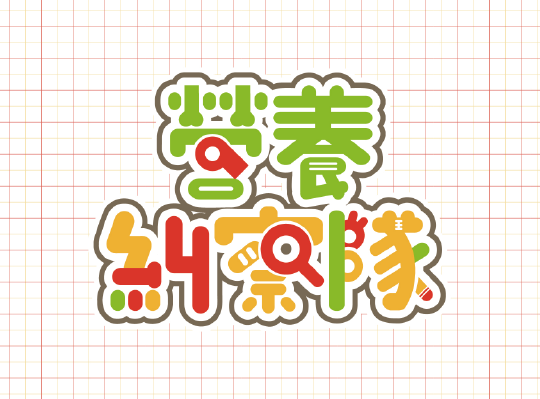
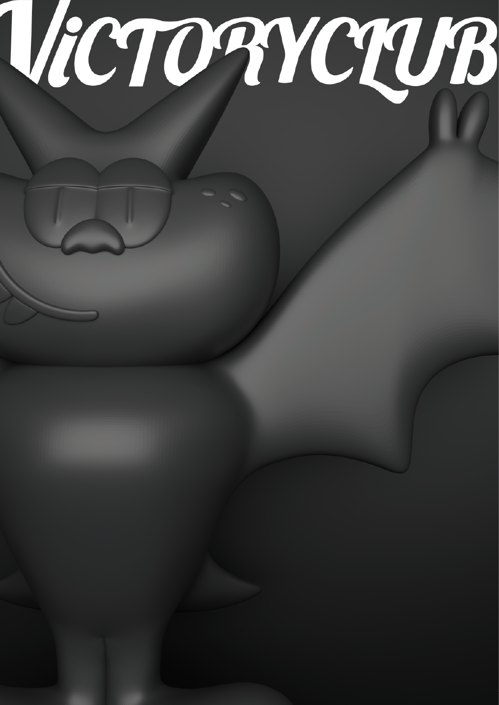
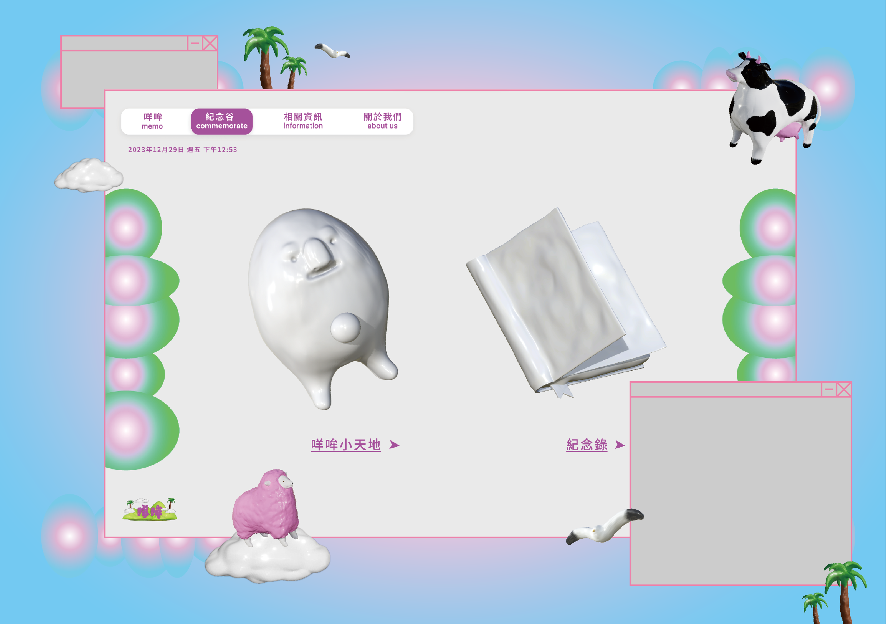
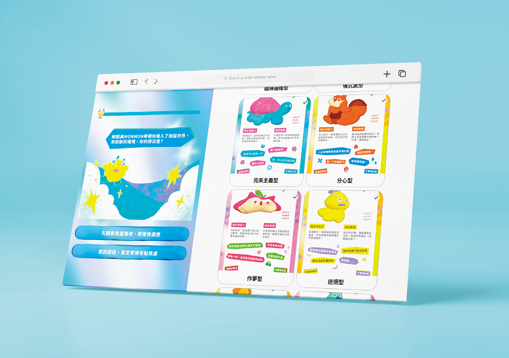
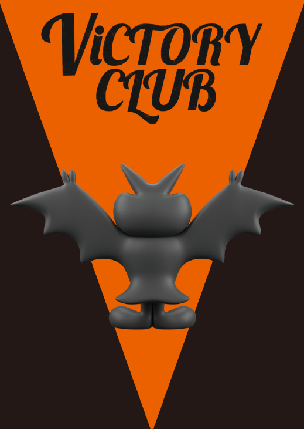
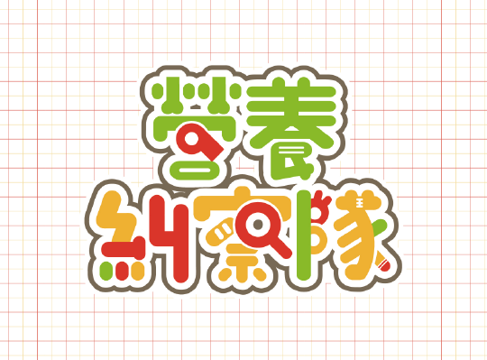
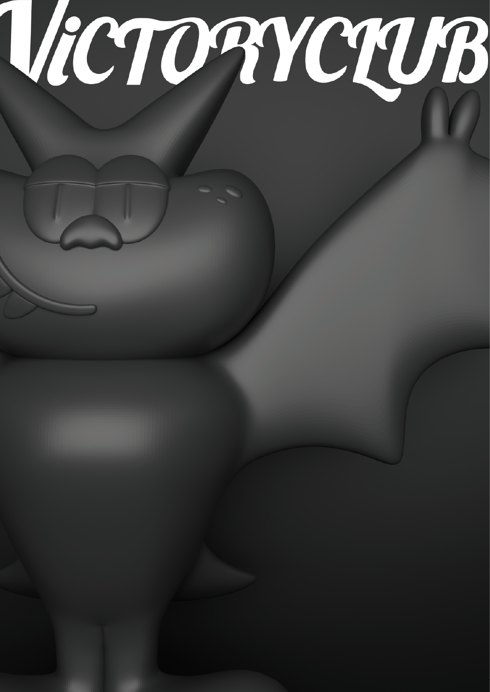
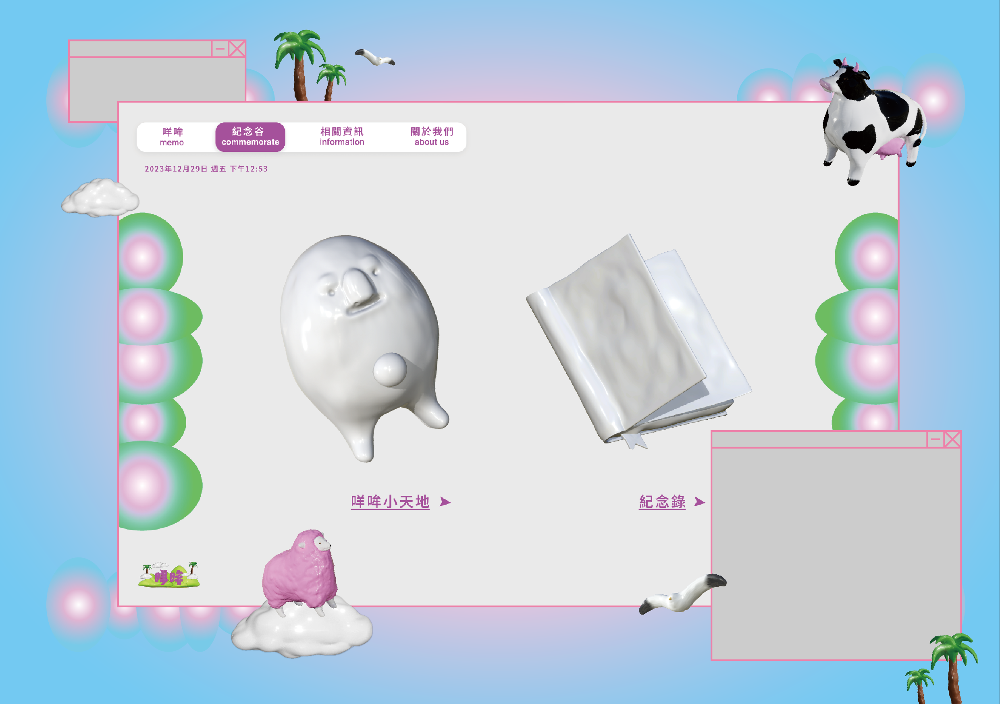
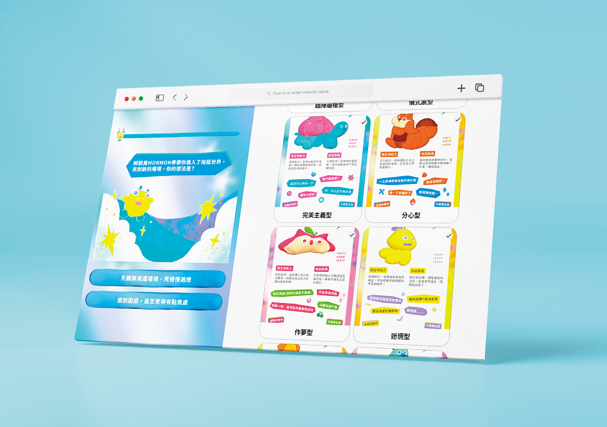
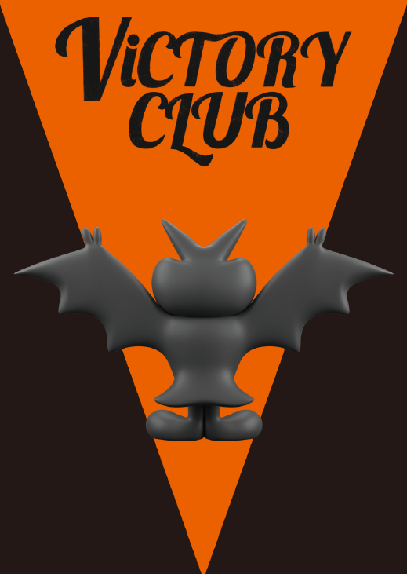

UNDER #VIBE
C04 情緒色彩實驗
現代世界充滿著各種多元的情感和主觀意識，這些難以言喻的情緒常透過色彩來表達。透過沉浸於自己的感受，我們重新定義了情緒所代表的色彩，並為自己贴上了新的情緒標籤。在 #VIBE 下重新定義情緒色彩，創造出全新的想像世界，透過 # 標籤將情感與色票連結，讓現代人在社群中表達任何情緒，同時也能作為色彩碼的使用方式。
The modern world is filled with diverse emotions and subjective consciousness. These inexpressible feelings are often conveyed through colors. Immersed in your own emotions, you redefine the emotional hues and label new emotional values for yourself under #VIBE. Redefine emotional colors under #VIBE and create new imaginations. Link emotions with color charts using hashtags, allowing people to express any emotion on social media, while also serving as a way to represent color codes.
組員 Members
#黃冠霖
#黃郁暄
#呂柏陞
#鄭喬濃
指導老師 Supervisor
林家駿
 
